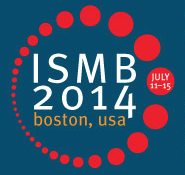

Network Biology Community - ISMB 2014 - Boston

Conference site
The NetBio community meeting is held in conjunction with ISMB, the
largest computational biology/bioinformatics conference in the world,
which is in Boston, Massachusetts in mid-July 2014. The NetBio SIG
will focus on two major areas: (1) the development of network-related
tools and resources, and (2) the application of network analysis and
visualization in the study of biology and
medicine. The meeting will provide a unique interface between tool
developers and users in the field of network biology. Through these
complementary lenses, the SIG will bring into focus the current state
of the field, its future promise and how to get from here to there.
Important Dates
- April 2: Open call for abstract submissions
- April 22: Submission deadline --> extended to April 29
- May 11: Notification of accepted abstracts --> extended to May 14
- June 6: Early registration discount cut-off date
- July 11: NetBio SIG
- July 13-15: ISMB 2014, Main program
Submission Guidelines
- Length: Up to 1 page max, including figure
- Format: Min 11pt font, PDF
- Content: Please include a title, author list (underline
presenter), brief summary paragraph, and references where appropriate.
Feel free to include hyperlinks to relevant sites (e.g., for Tool &
Resource submissions). Within the 1-page limit, you may also include a
figure and/or table.
- Topic: During submission you will select a topic area for your
abstract: Tools & Resources or Applied Research
- Presentation: Also indicate whether you would prefer to
present a talk, poster, or either. We will accommodate as many talks as
possible, but may invite you to present a poster if the schedule is full.
- Submission: The link below will take you to the EasyChair submission page.
Enter all Authors, enter a Title and brief summary paragraph (called "Abstract"), choose a Category,
enter Keywords, choose a Topic, and upload your 1-page PDF (called "Paper").
SIG Program
Keynote Speakers
- Marc Vidal
- How are interactome networks organized at the scale of the whole cell? - Harvard University, USA
- Marian Walhout
- How is complexity organized, how does it evolve and how is it maintained? - UMass Medical School, USA
- Manolis Kellis
- Regulatory and network clustering of genetic variants associated with complex traits - MIT, USA
Schedule and Abstracts
Past Presentations
Organizing Committee
- Alexander Pico, Gladstone Institutes, UCSF, profile
- Scooter Morris, RBVI, University of California at San
Francisco, profile
- Gary Bader, University of Toronto, profile
- Mario Albrecht, University Medicine Greifswald, Germany, profile
- Natasa Przulj, Imperial College London, profile
- Esti Yeger-Lotem, Ben-Gurion University of the Negev, profile
- Frank Kramer, University Medical Center Gottingen, profile
- Martina Kutmon, University of Maastricht, profile